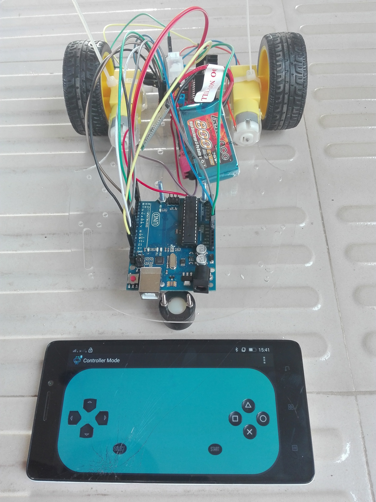
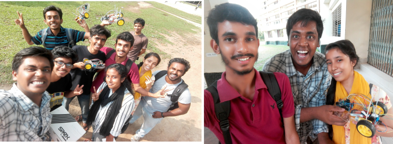
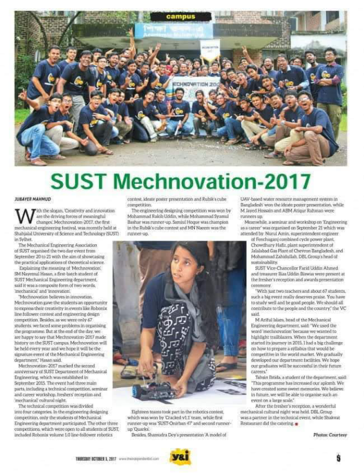

Line Following Robot
Line Following Robot is a robot that traces a line and follows the path.
I completed this project through an "Introduction to Robotics" workshop organized by RoboSUST.

Here are my fellow roboticists. The group built line following robots together as part of the workshop and competition.

In Mechnovation 2017, my team participated in the Line Following Competition.
